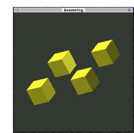
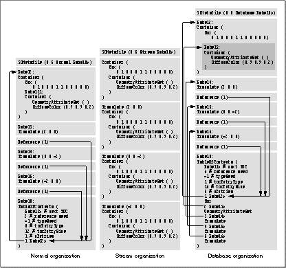

Metafile File Structure
A metafile is simply a sequence or list of one or more valid metafile objects. Each metafile must contain exactly one 3D metafile header, and this header must be the first object to occur in the file. Objects following the header may occur in any order permitted by the metafile class hierarchy. Currently, every object that begins in a metafile must be wholly contained in that file; thus, it is not legal to truncate the description of an object at the end of a file.A metafile may include one or more tables of contents, but need not include any. Should a metafile include more than one table of contents, each table of contents should continue the record provided by the immediately previous table of contents (if such exists) without duplication. A table of contents may contain information about objects occurring before or after it, or both, but should not contain information about any object that either precedes an object mentioned in a previous table of contents or follows an object mentioned in a subsequent table of contents. Conventions for listing objects in tables of contents are described in the section "Tables of Contents."
There are three principal types of metafile: stream, normal, and database. The type of a metafile is indicated by a flag in the metafile header. See the section "3D Metafile Header" for complete details on these flags.
In a stream file, objects can not be instantiated by reference; the complete specification of an object must occur at each place in the file at which that object is to be instantiated. Objects can be instantiated by reference in normal and database files. In a normal metafile, the complete specification of an object can occur once only; an object can be instantiated multiply only by reference. No such restrictions apply to database files. In a database file, every object that can be instantiated by reference and is not itself a reference object must be listed in a table of contents (whether or not that object has been instantiated by reference).
A stream file can but need not include a table of contents. A database file must include a table of contents. A normal file in which objects are instantiated by reference must include a table of contents; a normal file in which no objects are instantiated by reference can but need not include a table of contents.
To illustrate the differences among the three types of metafile, we show how a single model (Figure 1-1) is described in a text file of each type. The model consists of four occurrences (at different locations) of a colored box.
Figure 1-1 Four instantiations of a box

The following is a complete specification of the colored box shown in Figure 1-1.
Container ( Box ( 0 1 0 0 0 1 1 0 0 0 0 0 ) Container ( AttributeSet ( ) DiffuseColor ( 0.9 0.9 0.2 ) ) )The expression
Container (...) is used
subsequently to abbreviate this specification. Transforms are used
to place the box in various positions (each transform applies to
the object specified or referenced immediately subsequent to it).
In a stream file, the specification of the box must occur four times, as shown in Listing 1-1.
3DMF ( 1 0 Stream Label0> ) # header Container ( ... ) # first instantiation of box Translate ( 3 0 0 ) # transform Container ( ... ) # second instantiation Translate ( 0 3 0 ) # transform Container ( ... ) # third instantiation Translate ( -3 0 0 ) # transform Container ( ... ) # fourth instantiationSuch repetition can make stream files lengthy. However, a stream file can be read by a parser having only sequential access to that file.
In a normal file, the box is completely specified once and is instantiated by reference three times. The file pointers and reference objects used to effect instantiations by reference are listed together in the table of contents. Other referenceable objects (such as the transforms) that are instantiated once only are not listed in the table of contents.
The normal metafile permits the most compact representation of the model.
3DMetafile ( 1 0 Normal Label0> )
Label1: Container ( ... ) # first instantiation
Translate ( 3 0 0 )
Reference ( 1 ) # second instantiation
Translate ( 0 3 0 )
Reference ( 1 ) # third instantiation
Translate ( -3 0 0 )
Reference ( 1 ) # fourth instantiation
Label0: TableOfContents (
2 -1 0 12
1
1 Label1>
)
- Note
-
Label1>is a file pointer correlated with the label Label1 that precedes the specification of the box.Reference ( 1 )is a reference object correlated withLabel1>(and thus with the specification of the box) in the table of contents. See the section "File Pointers" on page 1-24 for an explanation of how instantiation by reference is accomplished through the use of these objects. ·
The contents of a database file can be discovered quickly by inspection of its tables of contents.
Listing 1-3 A database metafile
3DMetafile ( 1 0 Database Label0> ) Label1: Container ( Box ( 0 1 0 0 0 1 1 0 0 0 0 0 ) Label2: Container ( AttributeSet ( ) DiffuseColor ( 0.9 0.9 0.2 ) ) ) Label3: Translate ( 3 0 0 ) Reference ( 1 ) Label4: Translate ( 0 3 0 ) Reference ( 1 ) Label5: Translate ( -3 0 0 ) Reference ( 1 ) Label0: TableOfContents ( 2 -1 0 12 5 1 Label1> 2 Label2> 3 Label3> 4 Label4> 5 Label5> )Figure 1-2 shows, side by side, the three principal forms of a metafile.

3D Metafile Reference © Apple Computer, Inc.